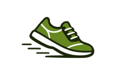

Professorat
Enllaç per a la classe
Activitat
Nivell
Tema
Matemàtiques
No matemàtiques
Tot
Subtema
Marca-ho tot
Desmarca-ho tot
Sessions
1
2
3
4
5
Preguntes
1
2
3
4
5
6
7
8
9
10
Errors màx.
1
2
3
4
5
6
7
8
Sessió fixa
— Aleatòria —
A
B
C
Copia
▶
Tutorial
Obre
Enllaç:
🖨️
Targetes de vocabulari per imprimir
📒
Àlbum de paraules
🏠
Portada de l'alumnat